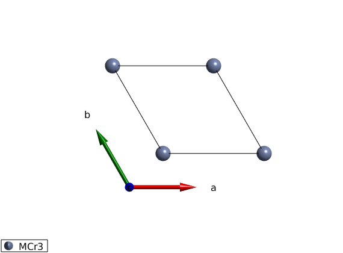
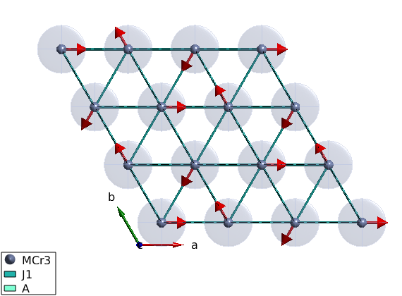

Help on SpinW
Use the help command to get help on any SpinW function. For any function that starts with 'sw_' use help swfiles, for spinw class methods use help spinw.function_name. For help on plotting commands, use help swplot.
Contents
Open help files
help swfiles % To find the location of the spinw library use sw_rootdir % To open any of the functions in the Matlab editor, use edit spinw.plot % To look at any of the spinw object properties, double click on the % "Workspace" view on the name of the object. Also the data files % (symmetry.dat, atom.dat, color.dat, magion.dat) can be easily edited, for % example edit symmetry.dat % Some settings are ekpt during the active Matlab session, these can be % set/get using the swpref.setpref and swpref.getpref commands. To change % the default values, it can be defined in the startup.m file. To get all % current value use swpref
general functions
This folder contains all the spectral functions and general functions
that are related to SpinW.
### Files
#### Transforming and plotting calculated spin wave spectrum
These functions operate on the calculated spectra, which is the output of
[spinw.spinwave] or [spinw.powspec] commands. They enable to post process
the calculated spin-spin correlation function, including instrumental
resolution, cross section calculation, binning etc.
sw_econtract
sw_egrid
sw_filelist
sw_instrument
sw_magdomain
sw_neutron
sw_omegasum
sw_plotspec
sw_xray
#### Generate list of vectors in reciprocal space
These two functions can generate a set of 3D points in reciprocal space
defining either a path made out of straigh lines or a volume.
sw_qgrid
sw_qscan
#### Resolution claculation and convolution
These functions can import Energy resolution function and convolute it
with arbitrary multidimensional dataset
sw_res
sw_resconv
sw_tofres
#### SpinW model related functions
sw_extendlattice
sw_fstat
sw_model
sw_bonddim
#### Constraint functions
Contraint functions for [spinw.optmagstr].
gm_planar
gm_planard
gm_spherical3d
gm_spherical3dd
#### Geometrical calculations
Basic geometrical calculators, functions to generatate rotation
operators, generate Cartesian coordinate system from a set of vectors,
calculate normal vector to a set of vector, etc.
sw_basismat
sw_cartesian
sw_fsub
sw_mattype
sw_nvect
sw_quadell
sw_mirror
sw_rot
sw_rotmat
sw_rotmatd
#### Text and graphical input/output for different high level commands
sw_multicolor
sw_parstr
sw_timeit
#### Acessing the SpinW database
Functions to read the different data files that store information on
atomic properties, such as magnetic form factor, charge, etc.
sw_atomdata
sw_cff
sw_mff
sw_nb
#### Useful physics functions
The two functions can calculate the Bose factor and convert
energy/momentum units, both usefull for neutron and x-ray scattering.
sw_bose
sw_converter
#### Import functions
Functions to import tables in text format.
sw_import
sw_readspec
sw_readtable
#### Miscellaneous
swdoc
sw_freemem
sw_readparam
sw_rootdir
sw_uniquetol
sw_update
sw_version
sw_mex
ans =
'/home/simonward/Documents/MATLAB/Development/spinw/'
ans =
Swpref object, swpref class:
Stored preferences:
Name Value Label
__________ __________________________________ ________________________________________________________________________________________________________
'fid' [ 0] 'file identifier for text output, default value is 1 (Command Window)'
'expert' [ 0] 'expert mode (1) gives less warnings (not recommended), default value is 0'
'tag' 'swplot' 'defines the tag property of the crystal structure plot figures'
'nmesh' [ 3] 'default number of subdivision of the icosahedron for plotting'
'maxmesh' [ 6] 'maximum number of subdivision of the icosahedron for plotting'
'npatch' [ 50] 'number of edges for patch object'
'fontsize' [ 12] 'fontsize for plotting'
'tid' [ 0] 'identifier how the timer is shown, default value is 1 (Command Window), value 2 gives graphical output'
'colormap' @cm_inferno 'default colormap'
'usemex' [ 0] 'if true, mex files are used in the spin wave calculation'
'docurl' 'https://tsdev.github.io/spinwdoc' 'url to the documentation server'
Generate lattice
We create a triangular lattice of magnetic atoms.
tri = spinw; % The lattice parameters in Angstrom and angles in degree can be defined. tri.genlattice('lat_const',[3 3 4],'angled',[90 90 120]) % To plot the lattice use the command spinw.plot. plot(tri) % In the plot window, you can zoom with the mouse wheel, pan by pressing % the Ctrl button while dragging. Change the plot range and view direction % by pressing the corresponding buttons on the top.
Warning: There are no atoms in the plotting range!
Adding atoms
We add 1 atom at the origin of the unit cell, spin-3/2 Cr3+ ion using the spinw.addatom.
tri.addatom('r',[0 0 0],'S',3/2,'label','MCr3') plot(tri)
Definition of the spin-Hamiltonian
We create an antiferromagnetic first neighbor Hamiltonian plus easy plane single ion anisotropy red ellipsoids represent the single ion anistropy on the plot (equienergetic surface) examine the plot and test different values of A0 with different signs. The plot command can plot rectangular cut of the lattice setting the unit option to xyz and giving the plot range in Agnstrom.
A0 = 0.1; tri.addmatrix('label','J1','value',1) tri.addmatrix('label','A','value',[0 0 0;0 0 0;0 0 A0]) tri.gencoupling tri.addcoupling('mat','J1','bond',1) tri.addaniso('A') plot(tri,'range',[22 20 1/2],'unit','xyz','cellMode','single')
Magnetic structure
The ground state magnetic structure of the above Hamltonian is a spiral, with propagation vector of (1/3,1/3,0). We define the plane of the spiral as the ab plane. Careful: the given spin vector is column vector! What are the angles between neares neighbor moments?
tri.genmagstr('mode','helical','S',[1;0;0],'k',[1/3 1/3 0],'n',[0 0 1],'nExt',[1 1 1]) plot(tri,'range',[3 3 1/2],'cellMode','inside','magColor','red')
Spin wave dispersion
We calculate the spin wave dispersion along the (H,H,0) high symmetry direction. How many spin wave modes are there and why? What does the red line mean? Did you got any warning?
spec = tri.spinwave({[0 0 0] [1 1 0] 500},'hermit',false);
figure
sw_plotspec(spec,'mode','disp','imag',true,'colormap',[0 0 0],'colorbar',false)
axis([0 1 0 5])
Warning: Eigenvectors of defective eigenvalues cannot be orthogonalised at some q-point!
Spin-spin correlation functions
The spin-spin correlations is already calculated, however the result contains 9 numbers per Q-point per mode. It is not possible to show this on a single plot.
BUT!
1. we can calculate the neutron scattering cross section 2. we can select one of the components S_alpha_beta(Q,w) 3. we can sum up the diagonal S_alpha_alpha(Q,w)
What do you see? Where is the largest intensity? How is it related to the magnetic propagation vector?
Why are some modes gapped? What type of spin-spin correlations are gapped?
Why do we have Szz?
Shouldn't the spins precess around M? Shouldn't each spin wave mode corresponds to a precession in a specific plane not a motion along a specific axis?
%spec = sw_egrid(spec,'component','Sperp','Evect',0:0.01:5.5); spec = sw_egrid(spec,'component',{'Sxx+Syy' 'Szz'},'Evect',0:0.01:5); %spec = sw_egrid(spec,'component','Syz','Evect',0:0.01:5); figure sw_plotspec(spec,'mode','color','dE',0.2,'imag',false) hold on axis([0 1 0 5.5]) caxis([0 3])
k=0 magnetic structure
We can generate the same magnetic structure with zero propagation vector on a magnetic supercell.
Why would we do that? Not for a triangular lattice, but in more complex cases, we will have to!
You can keep the previous structure plot by pressing the red circle on the figure to compare the new magnetic structure. Is there any difference?
What are we doing here? Can you tell from the script?
Check out the tri.magstr command? What data is stored there? What are the dimensions of the different matrices?
You can also compare the energy per spin of the old magnetic structure and the new magnetic structure using the spinw.energy() function. Is there any difference?
You can also store the new magnetic structure in a separate SpinW object by first duplicating the original object using the copy() command!
What happens when we use tri2 = triNew, without the copy command?
triNew = copy(tri); tri2 = triNew; triNew.genmagstr('mode','random','next',[3 3 1]) triNew.optmagsteep('nRun',1e4) % Converged? triNew.genmagstr('mode','rotate','n',[0 0 1]) phi1 = atan2(triNew.magstr.S(2,1),triNew.magstr.S(1,1)); triNew.genmagstr('mode','rotate','n',[0 0 1],'phi',-phi1) plot(triNew,'range',[3 3 1],'atomLegend',false) % How does the magnetic structures compare? Are they the same? Why? % tri.magstr tri2.magstr
ans =
struct with fields:
S: [3×1 double]
k: [0.3333 0.3333 0]
n: [0 0 1]
N_ext: [1 1 1]
exact: 1
ans =
struct with fields:
S: [3×9 double]
k: [0 0 0]
n: [0 0 1]
N_ext: [3 3 1]
exact: 1
Spin wave dispersion on the k=0 magnetic structure
We calculate the spin wave dispersion along the (H,H,0) high symmetry direction. How many modes do we have? Is there more than before? Which is the right one then?
Why are there vertical lines in the dispersion? Is it a bug?
spec = tri.spinwave({[0 0 0] [1 1 0] 500},'hermit',false);
figure
subplot(2,1,1)
sw_plotspec(spec,'mode','disp','imag',true,'colormap',[0 0 0])
colorbar off
axis([0 1 0 5])
% spin-spin correlation functions
spec = sw_egrid(spec,'component','Sperp','Evect',0:0.01:5.5);
subplot(2,1,2)
sw_plotspec(spec,'mode','color','dE',0.2,'imag',false)
axis([0 1 0 5.5])
caxis([0 3])
legend off
colorbar off
swplot.subfigure(1,3,1)
Warning: Eigenvectors of defective eigenvalues cannot be orthogonalised at some q-point!
Written by Sandor Toth 06-Feb-2016